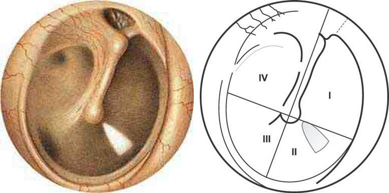
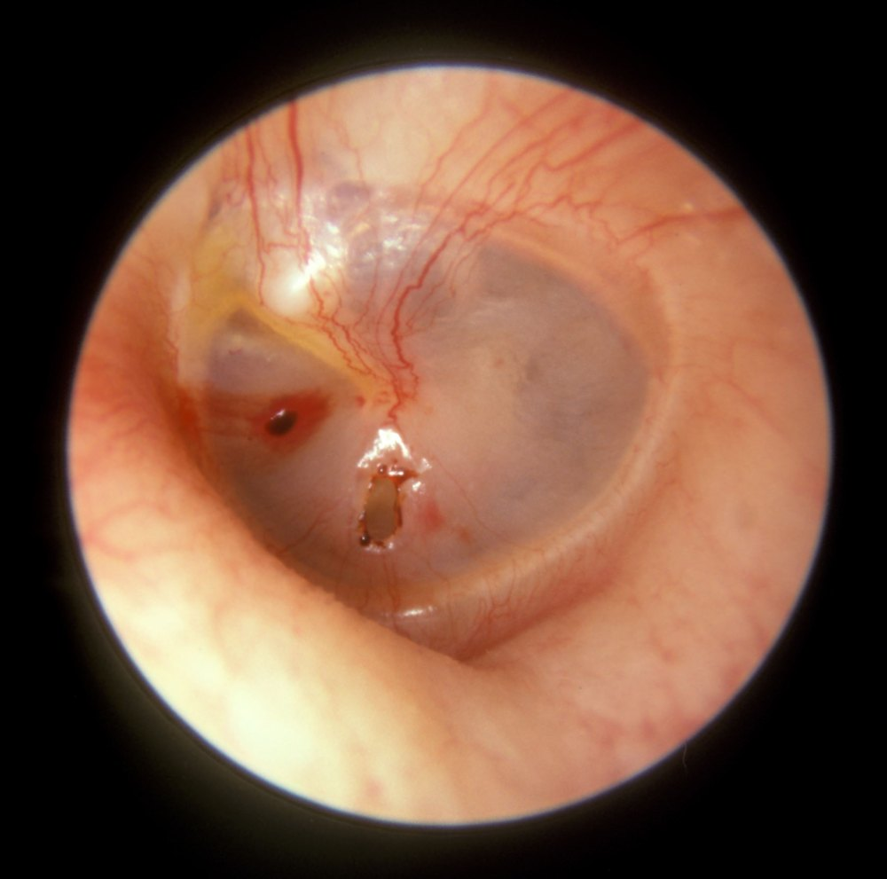

Сверка с PDF рубрикатора выполняется…
Травма уха
Клинические рекомендации от 18.11.2024 · взрослые и дети
Основные положения
- Рекомендация охватывает поверхностную травму уха (ПТУ: ушиб, отогематома, раны, дефекты раковины) и травматический разрыв барабанной перепонки (ТРБП).
- Отогематому устраняют всегда: до 48 часов и менее 2 см — аспирация иглой 18G, больше или позже — разрез и дренирование; затем давящая повязка.
- Разрыв барабанной перепонки (попадание воды в ухо недопустимо):
- свежая перфорация менее 25% площади без выделений из уха, кроме взрывной травмы: наблюдение 1–3 месяца;
- разрыв менее 50% площади, кроме взрывной травмы: консервативная мирингопластика;
- стойкая перфорация (сохраняется более 3 месяцев): тимпанопластика у всех пациентов, в том числе после взрывной травмы.
- Инфицированная рана и перихондрит: ранние системные антибиотики 7–10 дней, фторхинолоны — только взрослым; при инфицированных ранах — столбнячный анатоксин.
- Экстренная госпитализация: осложнения (перихондрит, мастоидит) и необходимость операции.
Клиническая картина и классификация
Определения раздел 1.1 КР
| Термин | Определение |
|---|---|
| Поверхностная зона уха (ПЗУ) | ушная раковина, перепончато-хрящевая часть слухового прохода, мягкие ткани сосцевидной области |
| Поверхностная травма уха (ПТУ) | механическое воздействие (удар, ушиб, укус, ранение) в поверхностной зоне уха |
| Ушиб уха | повреждение мягких тканей без видимого нарушения их целостности |
| Отогематома | скопление крови между хрящом и надхрящницей ушной раковины после механического воздействия |
| Посттравматический дефект ушной раковины | частичное нарушение целостности мягких тканей или полное отсутствие раковины (ампутация) |
| Перихондрит ушной раковины | острое воспаление надхрящницы с переходом на кожу раковины и перепончато-хрящевую часть прохода, без мочки |
| Посттравматический стеноз слухового прохода | сужение наружного слухового прохода после травмы |
| Акубаротравма | повреждение среднего и внутреннего уха от одновременного резкого перепада давления и звука высокой интенсивности |
| Баротравма уха | повреждение среднего и внутреннего уха от резкого перепада давления в слуховом проходе или барабанной полости |
| Травматический разрыв барабанной перепонки (ТРБП) | нарушение целостности барабанной перепонки от внешних причин |
Этиология
Поверхностная травма уха возникает при ударе, ушибе, укусе или ранении (колотом, резаном, рваном, огнестрельном) и может привести к утрате органа или значительному обезображиванию с частичной утратой слуховой функции.
- ушиб: закрытое повреждение мягких тканей без видимого нарушения их целостности; хрящ ушной раковины не повреждается, подкожного и поднадхрящничного кровоизлияния нет;
- отогематома: скопление крови между хрящом и надхрящницей при более выраженном воздействии; возникает у борцов, боксёров, лиц тяжёлого физического труда, при длительном давлении жёсткого головного убора или твёрдой подушки, при ударе по ушной раковине или падении на неё;
- посттравматический дефект ушной раковины при укусах, порезах, ранениях: от частичного нарушения целостности мягких тканей до полного отсутствия раковины (ампутации).
Инфицирование раны может привести к перихондриту ушной раковины, её деформации и рубцовой атрезии наружного слухового прохода.
- механические: острые предметы, самостоятельная чистка уха («Q-tip injury»), ятрогенно при промывании, удалении инородных тел, аспирации;
- баротравма: резкий перепад давления воздуха при авиаперелёте или воды при погружении, удар ладонью по уху, взрывная волна;
- сочетанная травма основания черепа: поперечный перелом височной кости, огнестрельное ранение уха;
- термические: окалина при электросварке, удар молнии;
- химические: агрессивные жидкости.
У детей чаще тупая травма, баротравма, инородное тело; проникающая травма ватной палочкой, спичкой, шпилькой — самим ребёнком, ухаживающими или ятрогенно при удалении инородного тела.
80–97% разрывов заживают сами за 2–4 недели независимо от локализации и выделений, влияет лишь размер дефекта. При взрывной травме с большими перфорациями — в 56–82%, до 3 месяцев. Если в ухо попадает вода — риск инфицирования; после минно-взрывной травмы возможна интратимпанальная холестеатома уже через 6 месяцев.
Классификация
- закрытая (ушиб) и ранения;
- поверхностная (без повреждения височной кости) и глубокая (с повреждением височной кости).
- по времени: свежая перфорация (менее 3 месяцев) и стойкая;
- с гноетечением или сухая;
- по размеру: малая — менее 25% площади (менее 1 квадранта), средняя — 25–50% (1–2 квадранта), большая — более 75% (более 2 квадрантов).
Нарушения слуха, в том числе при акубаротравме, классифицируют по действующей классификации потери слуха.
Дефекты ушной раковины классифицируют по Ю. Н. Ростокину (1975): частичные верхнего, среднего, нижнего отдела, субтотальные, тотальные; и по H. Weerda (1998): центральные, периферические, частичная реконструкция, дефекты мочки, задние, субтотальные, полная потеря раковины, дефекты околоушных мягких тканей, после ожогов.
Клиническая картина
Отогематома
- обычно в верхней половине наружной поверхности раковины;
- флюктуирующая округлая припухлость синеватого или багрового оттенка;
- мочку не затрагивает;
- пальпация обычно безболезненна.
Перихондрит: следствие несвоевременного удаления крови из отогематомы.
- выраженная боль в раковине и слуховом проходе;
- раковина увеличена, контуры сглажены, мочка не вовлечена;
- флюктуация при гное между надхрящницей и хрящом;
- при позднем обращении гнойное расплавление хряща, секвестры, деформация раковины;
- лихорадка, бессонница из-за пульсирующей боли, иногда озноб;
- иррадиация боли в височную, затылочную и шейную область.
Ранения: возможен частичный или полный отрыв раковины; кровотечение из ветвей наружной сонной артерии обычно умеренное.
Признаки повреждения глубжележащих структур- интенсивное кровотечение, требующее неотложной помощи, возникает при повреждении затылочной, височной, задней ушной артерий или их ветвей;
- ограничение подвижности нижней челюсти позволяет заподозрить повреждение её сустава;
- выделение слюны через рану указывает на повреждение околоушной слюнной железы;
- парез лицевого нерва указывает на повреждение его периферических ветвей;
- при более глубоком распространении инфекции могут развиться лабиринтит и внутричерепные осложнения.
Объём повреждения раковины зависит от силы и направления воздействия: от ссадин и кровоподтёков до отрыва и размозжения.
Разрыв барабанной перепонки: снижение слуха, заложенность, небольшой шум; непосредственно после травмы возможны кровянистые выделения из уха.
- акубаротравма: снижение слуха вплоть до глухоты, головокружение, нарушение равновесия;
- при взрывной травме из-за тяжёлого общего состояния у половины пострадавших повреждение слуха не диагностируют или диагностируют поздно;
- проникающая травма у детей: разрыв цепи косточек, повреждение лицевого нерва и подножной пластинки стремени, перилимфатическая фистула, гемотимпанум; потеря слуха, головокружение, нистагм, атаксия.
В учебнике: травмы уха. Анатомия и физиология: наружное и среднее ухо, внутреннее ухо.
Диагностика
Диагноз устанавливается на основании анамнеза, общего осмотра с тщательным осмотром поверхностной зоны уха и барабанной перепонки, отоскопии, заключений других специалистов и лабораторных данных.
- боль, отёк мягких тканей;
- кровотечение, дефект тканей раковины, ссадины, кровоподтёки;
- снижение слуха, головокружение;
- недомогание, слабость, лихорадка, головная боль.
- механизм: перепад давления (удар ладонью, ныряние, взрывная волна), острые предметы или чистка уха, перелом основания черепа при минно-взрывной травме;
- резкая боль в момент травмы, снижение слуха, шум, головокружение, нарушение равновесия;
- кровь или ликвор из уха (перелом основания черепа);
- звук выходящего воздуха при продувании или сморкании;
- после попадания воды — слизистые или гнойные выделения.
Осмотр и отоскопия
- все пациенты с подозрением на травму уха: первичный осмотр.
- гиперемия, отёк мягких тканей;
- флюктуация при скоплении крови или гнойного экссудата между надхрящницей и хрящом;
- дефекты раковины (частичный или полный отрыв), хрящевой части прохода, околоушной области;
- кровотечение.
- свежая перфорация: рваные, не омозолелые края, вывернутые кнаружи или в барабанную полость; иногда кровь в проходе;
- стойкая перфорация: омозолелые края;
- диагноз акубаротравмы (баротравмы) при соответствующем анамнезе устанавливается только при отоскопически видимом разрыве, без него картина сходна с туботитом.
Дефекты кожи слухового прохода, кровь в нём или подозрение на отоликворею могут указывать на перелом основания черепа. Системные признаки осложнений: лихорадка, интоксикация, выраженная диффузная головная боль.
Барабанная перепонка в норме (а) и схема её деления на квадранты (б)

Травматическая перфорация левой барабанной перепонки после удара ладонью по уху

Общий и биохимический анализ крови
Всем пациентам с травмой уха: развёрнутый общий и биохимический анализы крови.
Микробиологическое исследование отделяемого
Всем пациентам с травмой уха: посев гнойного отделяемого с определением чувствительности.
При гнойном перихондрите чаще всего синегнойная палочка; также золотистый стафилококк, кишечная палочка, протей.
Камертональные пробы и тональная аудиометрия
- взрослые с травмой уха и снижением слуха: исключить острую сенсоневральную тугоухость.
Аудиометрия показывает кондуктивную тугоухость и её степень; сенсоневральный компонент указывает на повреждение внутреннего уха. У маленьких детей камертональные пробы трудны.
КТ височной кости
- осложнения: перихондрит, абсцесс;
- подозрение на повреждение височной кости, слуховых косточек, перилимфатическую фистулу.
Перфорация в задне-верхнем квадранте при проникающей травме может указывать на повреждение косточек или внутреннего уха.
Сопутствующие повреждения (перелом челюсти, околоушной железы, лицевого нерва): консультации невролога, челюстно-лицевого хирурга, нейрохирурга.
Лечение
Ушибы ушной раковины специального лечения не требуют; ссадины обрабатывают антисептиком, накладывают асептическую повязку или наклейку.
Обезболивание
- поверхностная травма уха: НПВП по выраженности боли.
- ибупрофен: с 3 месяцев — свечи и суспензия, с 6 лет — таблетки, с 12 лет — капсулы;
- кетопрофен: с 6 лет — гранулы внутрь, с 15 лет — парентерально.
Обезболивание у взрослых таблица 1 в тексте КР
| Препарат | Разовая доза | Интервал | Максимум в сутки | Длительность |
|---|---|---|---|---|
| Диклофенак | 75 мг в/м (в КР «75 мл») | 12 ч | 150 мг | 2 сут |
| Кеторолак | 30 мг в/в, в/м | в КР «6- ч» | 60–90 мг | 2 сут |
| Кетопрофен | 100 мг в/в, в/м | 12 ч | 200 мг | не более 2 сут |
| Лорноксикам | 8 мг в/в, в/м | 12 ч | 16 мг | 1–7 сут |
| Декскетопрофен | 50 мг в/в, в/м | 8–12 ч | 150 мг | 2 сут |
Обезболивание у детей таблица 2 в тексте КР
| Препарат | Разовая доза | Интервал | Максимум в сутки | Длительность |
|---|---|---|---|---|
| Ибупрофен внутрь | 10–12 лет 300 мг; 7–9 лет 200 мг; 4–6 лет 150 мг; 1–3 года 100 мг; 6–12 мес 50 мг; 3–6 мес 50 мг | 8 ч; 6–8 ч (в таблице КР интервалы не сопоставлены с возрастами построчно) | 10–12 лет 900 мг; 7–9 лет 600 мг; 4–6 лет 450 мг; 1–3 года 300 мг; 6–12 мес 200 мг; 3–6 мес 150 мг | 3–5 сут |
| Ибупрофен ректально | 3–9 мес 60 мг; 9–24 мес 60 мг | 3–9 мес 8 ч; 9–24 мес 6 ч | 3–9 мес 180 мг; 9–24 мес 240 мг | не более 3 дней |
| Кетопрофен в/в, в/м | с 15 лет 100 мг | 12 ч | 200 мг | не более 2 сут |
| Кетопрофен внутрь | старше 6 лет 40 мг | 8 ч | 120 мг | не более 2 сут |
Лечение ран
- поверхностная травма уха: местно антисептики и антибактериальные мази.
- бензилдиметил-миристоиламино-пропиламмоний, повидон-йод, хлоргексидин;
- мази у взрослых: хлорамфеникол, неомицин, бацитрацин + неомицин, мупироцин;
- у детей неомицин, бацитрацин, мупироцин не применяют.
Кратность определяется выраженностью воспаления и экссудации; обрабатывают до разрешения инфекции или начала заживления.
Профилактика столбняка: при инфицированных и контаминированных ранах вводится столбнячный анатоксин.
- инфицированная рана;
- перихондрит ушной раковины.
- цефалоспорины III и IV поколения, фторхинолоны;
- длительность около 7–10 дней;
- фторхинолоны только взрослым; детям — только цефалоспорины IV поколения.
Разрыв барабанной перепонки
- разрыв менее 25% площади, кроме взрывной травмы.
При появлении выделений из уха назначаются системные антибиотики.
Наблюдение длится 1–3 месяца при свежей перфорации (менее 3 месяцев), площади менее 25% и отсутствии выделений из уха. Если перфорация сохраняется, показана тимпанопластика.
- разрыв менее 50% площади, кроме взрывной травмы.
Консервативная мирингопластика заключается в тампонаде слухового прохода коллагеновой гемостатической губкой поверх дефекта.
После процедуры- не допускать воды в ухо;
- не вводить препараты в барабанную полость;
- без самопродувания, чихания, сморкания;
- осмотр через 2–4 недели, раньше — при выделениях или снижении слуха;
- материал удаляют не ранее 4 недель.
Под местной анестезией лидокаином (10% аппликационно или 1% инфильтрационно, кроме детей до 1 года) с оптикой, через ушную воронку; после туалета и при необходимости освежения краёв материал больше перфорации укладывают поверх неё. Детям вмешательство выполняют под наркозом; используют и папиросную бумагу.
- стойкая перфорация после травматического разрыва (сохраняется более 3 месяцев), у всех пациентов.
- перелом или смещение слуховых косточек;
- холестеатому среднего уха;
- фистулу лабиринтных окон: вестибулярные нарушения более 2 недель, костно-воздушный интервал более 30 дБ, смешанная тугоухость.
- травма уха с вестибулярными симптомами у ребёнка.
Тимпанотомия позволяет выявить и закрыть перилимфатическую фистулу.
Признаки, при которых подозревают перилимфатическую фистулу- сенсоневральная тугоухость;
- нарушение равновесия, головокружение;
- нистагм в сторону поражения;
- перфорация в задне-верхнем квадранте.
Под эндотрахеальным наркозом поднимают тимпаномеатальный лоскут, осматривают окна; при явной травме удаляют или репонируют костные фрагменты. Если после аспирации прозрачная жидкость скапливается у окон не менее 5 минут наблюдения — фистула; окна закрывают жиром или фасцией, вестибулярные симптомы обычно проходят.
Отогематома, перихондрит, раны
- все пациенты с отогематомой: устранение для профилактики перихондрита.
- менее 48 часов после травмы и диаметр менее 2 см: аспирация иглой 18G, вкол у основания гематомы;
- больше 2 см или позже 48 часов: разрез и дренирование без косметического ущерба;
- профилактика рецидива: циркулярная давящая повязка, матрасные швы, фиксация магнитами.
- 0,5% прокаин: взрослым и детям старше 12 лет;
- 2% лидокаин: только взрослым.
Гнойный перихондрит: вскрытие и дренирование абсцесса раковины с удалением некротизированных тканей.
Частичный или полный дефект раковины: устранение дефекта. Хирургическую обработку проводят как можно раньше, с учётом косметики: удаляют только явно нежизнеспособные ткани, первичные швы, при большом натяжении — направляющие.
Ранение перепончато-хрящевой части слухового прохода: стерильные мягкие эластичные трубки в просвет для его восстановления.
Техника операций в учебнике: вскрытие гематомы и абсцесса ушной раковины, тимпанопластика.
Алгоритм действий врача при травме уха
- 1
Пациент с травмой уха
Пациент обратился с травмой уха. Первичный осмотр оториноларинголога обязателен при любом подозрении на травму уха: оценивают поверхностную зону уха и выполняют отоскопию.
- 2
Какой диагноз установлен?
По результатам осмотра и отоскопии определяют вид повреждения: ушиб мягких тканей, отогематома, травматический разрыв барабанной перепонки либо рана или дефект ушной раковины.
Какой диагноз установлен?
- 3
Ушиб мягких тканей
Ушиб ушной раковины: повреждение мягких тканей без видимого нарушения их целостности.
- 4
Консервативное лечение
конец алгоритмаУшибы ушной раковины специального лечения не требуют. Ссадины обрабатывают антисептиком и накладывают асептическую повязку. При боли назначают нестероидные противовоспалительные препараты по выраженности болевого синдрома.
- 5
Отогематома
Отогематома: скопление крови между хрящом и надхрящницей ушной раковины. Обычно это флюктуирующая округлая припухлость синеватого или багрового оттенка в верхней половине раковины; мочка не затрагивается.
Отогематому устраняют у всех пациентов для профилактики перихондрита.
Есть ли осложнения отогематомы?
- 6
Нет осложнений
Осложнений нет. Если с момента травмы прошло менее 48 часов и диаметр гематомы менее 2 см, выполняется аспирация иглой 18G с проколом у основания гематомы. При размере более 2 см или давности более 48 часов гематому вскрывают и дренируют.
Для профилактики рецидива накладывают циркулярную давящую повязку.
- 7
Консервативное и хирургическое лечение (устранение отогематомы)
конец алгоритмаЛечение консервативное и хирургическое: устранение отогематомы (аспирация либо разрез и дренирование) с последующей давящей повязкой.
- 8
Есть осложнения
Возникло осложнение, прежде всего перихондрит ушной раковины. Он проявляется выраженной болью, увеличением раковины с сглаженными контурами, лихорадкой; при гнойном расплавлении хряща развивается деформация раковины.
Показана экстренная госпитализация.
- 9
Консервативное и хирургическое лечение осложнений
конец алгоритмаЛечение консервативное и хирургическое. При гнойном перихондрите вскрывают и дренируют абсцесс раковины с удалением некротизированных тканей. Назначается системная антибактериальная терапия примерно на 7–10 дней: цефалоспорины III и IV поколения, фторхинолоны (только взрослым; детям только цефалоспорины IV поколения).
- 10
Травматический разрыв барабанной перепонки
Травматический разрыв барабанной перепонки. Пациента беспокоят снижение слуха, заложенность, небольшой шум, сразу после травмы возможна кровь из уха. При свежей перфорации края рваные, не омозолелые.
Попадание воды в ухо недопустимо из-за риска инфицирования.
- 11
Есть осложнения?
Оценивается, нет ли осложнений: признаков повреждения височной кости, слуховых косточек и внутреннего уха (перилимфатическая фистула), сопутствующих повреждений лицевого нерва или околоушной железы.
Есть ли осложнения разрыва барабанной перепонки?
- 12
Диагностика (КТ головы)
Выполняется компьютерная томография височной кости. Она показана при осложнениях (перихондрит, абсцесс) и при подозрении на повреждение височной кости, слуховых косточек, перилимфатическую фистулу.
При сопутствующих повреждениях (перелом челюсти, повреждение околоушной железы или лицевого нерва) необходимы консультации невролога, челюстно-лицевого хирурга, нейрохирурга.
Есть ли повреждение височной кости?
- 13
Поверхностная травма уха (повреждения височной кости нет)
Поверхностная травма уха: повреждения височной кости нет. Это ушиб, раны, частичный или полный отрыв ушной раковины, ранение перепончато-хрящевой части слухового прохода.
Есть ли осложнения поверхностной травмы?
- 14
Нет осложнений
Осложнений нет. Раны обрабатывают антисептиками и антибактериальными мазями, при инфицированных и контаминированных ранах вводят столбнячный анатоксин.
- 15
Консервативное и хирургическое лечение: хирургическая обработка ран, устранение дефекта ушной раковины и наружного слухового прохода и др.
конец алгоритмаВыполняется хирургическая обработка ран как можно раньше с учётом косметического результата: удаляют только явно нежизнеспособные ткани, накладывают первичные швы. Устраняют дефект ушной раковины и наружного слухового прохода; при ранении перепончато-хрящевой части прохода в его просвет вводят стерильные мягкие эластичные трубки.
Необходимость операции является показанием к экстренной госпитализации.
- 16
Есть осложнения
Присоединились осложнения поверхностной травмы: перихондрит, мастоидит и другие. Показана экстренная госпитализация.
Инфицированная рана и перихондрит служат показанием к системной антибактериальной терапии на 7–10 дней.
- 17
Консервативное и хирургическое лечение осложнений
конец алгоритмаКонсервативное и хирургическое лечение осложнений: при абсцессе раковины его вскрывают и дренируют, назначают системные антибиотики. Лечение проводится в стационаре.
- 18
Глубокая травма уха (повреждение височной кости есть)
Глубокая травма уха: повреждена височная кость. Состояние требует лечения в стационаре.
- 19
Консервативное и хирургическое лечение: хирургическая обработка ран, антромастоидотомия и др.
конец алгоритмаЛечение консервативное и хирургическое: выполняется хирургическая обработка ран, антромастоидотомия и другие вмешательства по показаниям.
- 20
Давность травмы не более 3 месяцев, перфорация менее 25 % площади барабанной перепонки, нет выделений из уха?
Для выбора тактики оценивают давность травмы, площадь перфорации и наличие выделений из уха. Выжидательное наблюдение возможно, если со времени травмы прошло не более 3 месяцев, перфорация составляет менее 25 % площади барабанной перепонки и из уха нет выделений.
Свежая перфорация малого размера без выделений из уха?
- 21
Наблюдение 1–3 месяца
Проводится наблюдение в течение 1–3 месяцев. Вода в ухо попадать не должна. При появлении выделений из уха назначаются системные антибиотики.
- 22
Перфорация барабанной перепонки сохраняется?
По окончании наблюдения или консервативной мирингопластики оценивается, закрылась ли перфорация.
- 23
Тимпанопластика
конец алгоритмаСтойкая перфорация, сохраняющаяся более 3 месяцев, служит показанием к тимпанопластике у всех пациентов, в том числе после взрывной травмы.
- 24
Консервативная мирингопластика
Показана консервативная мирингопластика при разрыве менее 50 % площади (кроме взрывной травмы). Слуховой проход тампонируют коллагеновой гемостатической губкой поверх дефекта.
После процедуры не допускается попадание воды в ухо и введение препаратов в барабанную полость, нельзя продувать ухо, чихать и сморкаться. Осмотр выполняется через 2–4 недели, материал удаляют не ранее чем через 4 недели.
Профилактика и диспансерное наблюдение. Показания к госпитализации
Показания к госпитализации
- осложнения поверхностной травмы: перихондрит, мастоидит и другие;
- необходимость операции: устранение дефекта раковины, слухового прохода и другие.
- нормальное общее состояние: нет лихорадки и интоксикации;
- нормальный общий анализ крови;
- нормальное заживление ран.
После выписки из стационара пациент находится на диспансерном наблюдении у оториноларинголога.
Профилактика: техника безопасности на производстве и в спорте, средства защиты головы — шлемы, каски.
При адекватном лечении прогноз благоприятный.
Осложнения без лечения или при неадекватном лечении- перихондрит;
- острый гнойный средний отит, мастоидит, лабиринтит;
- внутричерепные осложнения;
- флегмона, абсцесс.
При разрыве перепонки прогноз благоприятный; воспаление среднего уха удлиняет течение, но не меняет исход.
Коды МКБ-10
Источник и актуальность
Журнал сверки
Неточности и противоречия в тексте рекомендации
- Таблица 1 (обезболивание у взрослых): разовая доза диклофенака записана как «75 мл в/м» — по смыслу 75 мг; интервал кеторолака записан неполно («6- ч»). Сверяйте с инструкцией препарата.
- Таблица 2 (обезболивание у детей): для ибупрофена внутрь интервалы приёма не сопоставлены с возрастными группами построчно.